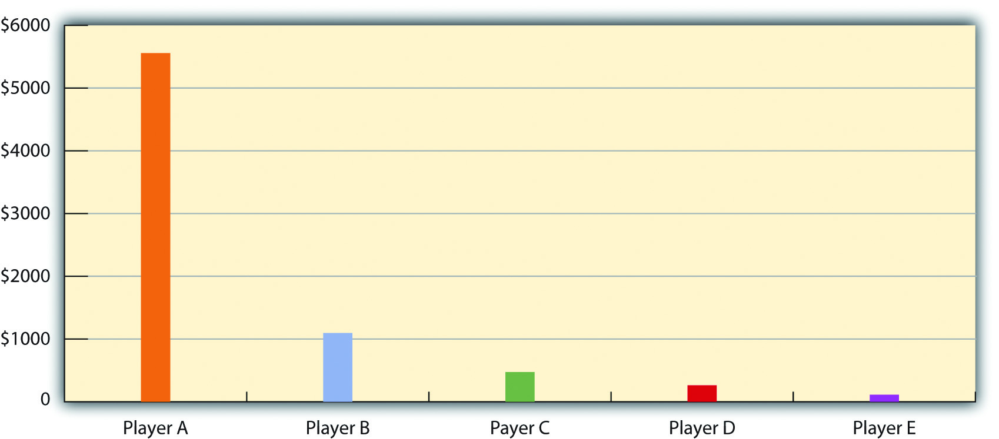
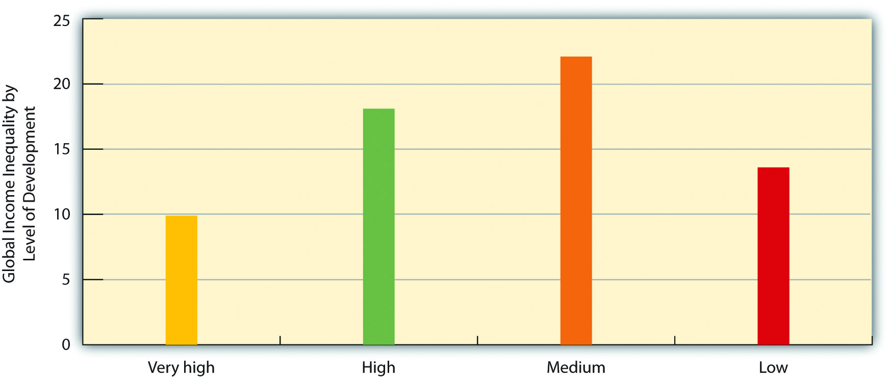

Stratification within the United States was discussed in Chapter 8 "Social Stratification". As we saw then, there is a vast difference between the richest and poorest segments of American society. Stratification also exists across the world. Global stratificationThe unequal distribution of wealth, power, prestige, resources, and influence among the world’s nations. refers to the unequal distribution of wealth, power, prestige, resources, and influence among the world’s nations. Put more simply, there is an extreme difference between the richest and poorest nations. A few nations, such as the United States, are very, very wealthy, while many more nations are very, very poor. Reflecting this latter fact, 40% of the world’s population, or about 2 billion people, lives on less than $2 per day (United Nations Development Programme, 2005).United Nations Development Programme. (2005). Human development report 2005. New York, NY: Author.
If the world were one nation, its median annual income (at which half of the world’s population is below this income and half is above it) would be only $1,700 (data from 2000). The richest fifth of the world’s population would have three-fourths of the world’s entire income, while the poorest fifth of the world’s population would have only 1.5% of the world’s income, and the poorest two-fifths would have only 5.0% of the world’s income (Dikhanov, 2005).Dikhanov, Y. (2005). Trends in global income distribution, 1970–2000, and scenarios for 2015. New York, NY: United Nations Development Programme. As Figure 9.1 "Global Income Distribution (Percentage of World Income Held by Each Fifth of World Population)" illustrates, this distribution of income resembles a champagne glass.
Figure 9.1 Global Income Distribution (Percentage of World Income Held by Each Fifth of World Population)

Source: Data from Dikhanov, Y. (2005). Trends in global income distribution, 1970–2000, and scenarios for 2015. New York, NY: United Nations Development Programme.
The game of Monopoly, used in Chapter 8 "Social Stratification" to illustrate U.S. stratification, again helps illustrate global stratification. Recall that if five people play Monopoly, each person would start out with $1,500. If each player represented one-fifth of the world’s population, and we divided the $7,500 according to the global distribution of income, then the richest player would begin with $5,558 of the $7,500 distributed to the five players combined. The next richest player would have $1,095. The third player would start with $473, while the next would have $263. The fifth and poorest player would begin with only $113. Figure 9.2 "Distribution of Starting Cash if Monopoly Resembled the Global Distribution of Income" depicts this huge disparity in money at the beginning of the game. Who would win? Who would be first to lose?
Figure 9.2 Distribution of Starting Cash if Monopoly Resembled the Global Distribution of Income
Source: Based on distribution of wealth data from Dikhanov, Y. (2005). Trends in global income distribution, 1970–2000, and scenarios for 2015. New York, NY: United Nations Development Programme.
As these figures make clear, the world is indeed stratified. To understand global stratification, it is helpful to classify nations into three or four categories based on their degree of wealth or poverty, their level of industrialization and economic development, and related factors. Over the decades, scholars and international organizations such as the United Nations and the World Bank have used various classification systems, or typologies.
One of the first typologies came into use after World War II and classified nations as falling into the First World, Second World, and Third World. The First World was generally the Western capitalist democracies of North America and of Europe and certain other nations (e.g., Australia, New Zealand, and Japan). The Second World was the communist nations belonging to the Soviet Union, while the Third World was all the remaining nations, almost all of them from Central and South America, Africa, and Asia. This classification was useful in distinguishing capitalist and communist countries and in calling attention to the many nations composing the Third World. However, it was primarily a political classification rather than a stratification classification. This problem, along with the demise of the Soviet Union by the end of 1991, caused this typology to fall out of favor.
A replacement typology placed nations into developed, developing, and undeveloped categories, respectively. Although this typology was initially popular, critics said that calling nations “developed” made them sound superior, while calling nations “undeveloped” made them sound inferior. Although this classification scheme is still used, it, too, has begun to fall out of favor.
Today a popular typology simply ranks nations into groups called wealthy (or high-income) nations, middle-income nations, and poor (or low-income) nations, based on measures such as gross domestic product (GDP) per capita (the total value of a nation’s goods and services divided by its population). This typology has the advantage of emphasizing the most important variable in global stratification: how much wealth a nation has. At the risk of being somewhat simplistic, the other important differences among the world’s nations all stem from their degree of wealth or poverty. Figure 9.3 "Global Stratification Map" depicts these three categories of nations (with the middle category divided into upper-middle and lower-middle). As should be clear, whether a nation is wealthy, middle-income, or poor is heavily related to the continent on which it is found.
Figure 9.3 Global Stratification Map

Source: Adapted from UNEP/GRID-Arendal Maps and Graphics Library. (2009). Country income groups (World Bank classification). Retrieved from http://maps.grida.no/go/graphic/country-income-groups-world-bank-classification.
Typologies based on GDP per capita or similar economic measures are very useful, but they also have a significant limitation. Nations can rank similarly on GDP per capita (or another economic measure) but still differ in other respects. One nation might have lower infant mortality, another might have higher life expectancy, and a third might have better sanitation. Recognizing this limitation, organizations such as the United Nations Development Programme (UNDP) use typologies based on a broader range of measures than GDP per capita. A very popular typology is the UNDP’s Human Development Index (HDI), which is a composite measure of a nation’s income, health, and education. This index is based on a formula that combines a nation’s GDP per capita as a measure of income; life expectancy at birth as a measure of health; and the adult literacy rate and enrollment in primary, secondary, and higher education as measures of education. Figure 9.4 "International Human Development, 2008" shows how nations rank according to the HDI. As will be evident, this map looks fairly similar to the map in Figure 9.3 "Global Stratification Map" that was based only on GDP per capita; the nations that rank high on human development are the wealthiest nations, and those that rank lowest on human development, such as Ethiopia and Rwanda, are the poorest nations.
Figure 9.4 International Human Development, 2008

Source: Adapted from United Nations Development Programme. (2010). International human development indicators. Retrieved from http://hdr.undp.org/en/data/map.
This similarity prompts some observers to say that the HDI is not really that much of an improvement over typologies based only on GDP per capita or similar economic measures. Still, the HDI has been widely used since the 1990s and reminds us that nations differ dramatically not only in their economic well-being but also in their social well-being. However, because health, education, and other social indicators do depend so heavily on wealth, our discussion of global stratification for the remainder of this chapter will use the familiar classification of wealthy, middle-income, and poor nations. We now highlight the basic differences among these three categories of nations.
The wealthy nations are the most industrialized nations, and they consist primarily of the nations of North America and Western Europe; Australia, Japan, and New Zealand; and certain other nations in the Middle East and Asia (e.g., Japan and Singapore). Many of them were the first nations to become industrialized starting in the 19th century, when the Industrial Revolution began, and their early industrialization certainly contributed to the great wealth they enjoy today. Yet it is also true that many Western European nations were also wealthy before the Industrial Revolution, thanks in part to the fact that they had been colonial powers and acquired wealth from the resources of the lands they colonized.
Although wealthy nations constitute only about one-sixth of the world’s population, they hold about four-fifths of the world’s entire wealth. They are the leading nations in industry, high finance, and information technology and exercise political, economic, and cultural influence across the planet. As the global economic crisis that began in 2007 illustrates, when the economies of just a few wealthy nations suffer, the economies of other nations and indeed of the entire world can suffer. Although each of the world’s wealthy nations is internally stratified to a greater or lesser degree, these nations as a group live a much more comfortable existence than middle-income nations and, especially, poor nations. People in wealthy nations are healthier and more educated, and they enjoy longer lives. At the same time, wealthy nations use up more than their fair share of the world’s natural resources, and their high level of industrialization causes them to pollute and otherwise contribute to climate change to a far greater degree than is true of nations in the other two categories.
Middle-income nations are generally less industrialized than wealthy nations but more industrialized than poor nations. They consist primarily of nations in Central and South America, Eastern Europe, and parts of Africa and Asia and constitute about one-third of the world’s population. Many of these nations have abundant natural resources but still have high levels of poverty, partly because political and economic leaders sell the resources to wealthy nations and keep much of the income from these sales for themselves.
There is much variation in income and wealth within the middle-income category, even within the same continent. In South America, for example, the gross national income per capita in Chile, adjusted to U.S. dollars, is $13,270 (2008 figures), compared to only $4,140 in Bolivia (Population Reference Bureau, 2009).Population Reference Bureau. (2009). 2009 world population data sheet. Washington, DC: Author. Many international organizations and scholars thus find it useful to further divide middle-income nations into upper-middle-income nations and lower-middle-income nations. Not surprisingly, many more people in the latter nations live in dire economic circumstances than those in the former nations. In Bolivia, for example, 30% of the population lives on less than $2 per day, compared to only 5% in Chile.
Poor nations are certainly the least industrialized and most agricultural of all the world’s countries. This category consists primarily of nations in Africa and parts of Asia and constitutes roughly half of the world’s population. They have some natural resources that political leaders again sell to wealthier nations while keeping much of the income they gain from these sales. Many of these nations rely heavily on one or two crops, and if weather conditions render a crop unproductive in a particular season, the nations’ hungry become even hungrier. By the same token, if economic conditions reduce the price of a crop or other natural resource, the income from exports of these commodities plummets, and these already poor nations become even poorer. An example of this latter problem occurred in Vietnam, a leading exporter of coffee. As coffee prices rose during the 1990s, Vietnam expanded its coffee production by greatly increasing the amount of acreage devoted to growing coffee beans. When the price of coffee plummeted in the early 2000s, Vietnam’s coffee industry, including the farmers who grow coffee, suffered huge losses. Many farmers destroyed their coffee plants to be able to grow other crops they thought would be more profitable (Huy, 2010).Huy, N. Q. (2010). Coffee production and consumption in Vietnam. Retrieved from http://www.docstoc.com/docs/27139628/COFFEE-PRODUCTION-AND-CONSUMPTION-IN-VIETNAM-Prepared-by-Nguyen- Because farmers in poor nations often change their crops in this manner for economic reasons, it is difficult for these nations to sustain a stable agricultural industry.
By any standard, people in these nations live a desperate existence in the most miserable conditions possible. They suffer from AIDS and other deadly diseases, live on the edge of starvation, and lack indoor plumbing, electricity, and other modern conveniences that most Americans take for granted. Most of us have seen unforgettable photos or video footage of African children with stick-thin limbs and distended stomachs reflecting severe malnutrition. We revisit their plight in Chapter 9 "Global Stratification", Section 9.2 "The Impact of Global Poverty".
In addition to classifying nations according to their ranking on a stratification typology, scholars and international organizations also determine the level of poverty in each nation. This determination provides valuable information beyond a nation’s GDP per capita or similar measure of wealth. Wealth and poverty are, of course, highly correlated: generally speaking, the wealthier a nation, the lower its level of poverty. However, this correlation is not perfect, and considering nations only in terms of their wealth may obscure important differences in their levels of poverty. For example, two nations, which we will call Nation A and Nation B, may have similar GDP per capita. In Nation A, wealth from its GDP is fairly evenly distributed, and relatively few people are poor. In Nation B, almost all wealth is held by a small number of incredibly rich people, and many people are poor. A nation’s level of poverty thus tells us what proportion of the population is living in dire straits, regardless of the nation’s level of wealth.
The measurement of global poverty is important for additional reasons (Haughton & Khandker, 2009).Haughton, J., & Khandker, S. R. (2009). Handbook on poverty and inequality. Washington, DC: World Bank. First, political and economic officials will not recognize the problem of poverty and try to do something about it unless they have reliable poverty data to motivate them to do so and to guide their decisions. As two experts on international poverty note, “It is easy to ignore the poor if they are statistically invisible” (Haughton & Khandker, 2009, p. 3).Haughton, J., & Khandker, S. R. (2009). Handbook on poverty and inequality. Washington, DC: World Bank. Second, valid measures of poverty reveal which regions of the world are poorest and which people in a given nation are poorest in terms of household characteristics (e.g., households headed by a single woman), location (e.g., region of country or urban vs. rural), and other factors. This type of knowledge enables antipoverty programs and strategies to be focused on the locations and people in those locations who are most in need of help. Third, valid measures of poverty enable officials and policymakers to know how well efforts to help the poor are working, as a poverty measure after some intervention can be compared to the poverty measure before the intervention.
Although it is important, then, to measure the poverty level of the nations of the world, it is rather difficult to do so. One problem is that the different nations have different standards of living. If an American woman who has a family to feed earns $10 per day, or about $3,650 per year, she and her family are very poor by American standards. However, a woman who earns the equivalent of $10 per day in many poor nations would be very wealthy by those nations’ standards, and she would be able to afford many more goods and services (because they cost so much less in those nations than in the United States) than her American counterpart.
Another problem was first encountered in Chapter 8 "Social Stratification"’s discussion of poverty in the United States. No matter what income level might be used as an “official” poverty line for the nations of the world, this level is inevitably an arbitrary poverty line. An individual or family whose income is just a bit above the official poverty line is not counted as being officially poor, even though they are still poor for all practical purposes. Moreover, the most common measures of official global poverty ignore episodic poverty. As Chapter 8 "Social Stratification" explained, individuals and families may move into and out of poverty within a given year or two, often more than once. Measures of global poverty (as well as measures of U.S. poverty) determine the number of poor people at one point in time and thus provide an underestimate of the number of people who are poor at least once in a given year or two years.
A third problem concerns exactly what is meant by poverty. Although poverty is usually thought of in monetary terms, some analysts emphasize that poverty involves things in addition to money, including inadequate nutrition, illiteracy, and other correlates of poverty. These analysts favor using measures such as calorie consumption or degree of malnutrition as indicators of poverty. Although these and related measures are indeed often used, monetary measures are most common and will be emphasized here.
Despite these problems, measures of global poverty are still useful for the reasons stated earlier. How, then, is global poverty measured? A very common and popular measure is one used by the World Bank, an international institution, funded by wealthy nations, that provides loans, grants, and other aid to help poor and middle-income nations develop their infrastructure and thus reduce their poverty. Each year the World Bank publishes its World Development Report, which, as its name implies, provides statistics and other information on the economic and social well-being of the globe’s almost 200 nations. The World Bank puts the official global poverty line (which is considered a measure of extreme poverty) at income under $1.25 per person per day, which amounts to about $456 yearly per person or $1,825 for a family of four. According to this measure, 1.4 billion people, making up more than one-fifth of the world’s population and more than one-fourth of the population of developing (poor and middle-income) nations, are poor. This level of poverty rises to 40% of South Asia and 51% of sub-Saharan Africa (Haughton & Khandker, 2009).Haughton, J., & Khandker, S. R. (2009). Handbook on poverty and inequality. Washington, DC: World Bank.
In view of the measurement problems noted earlier, the actual number of poor people worldwide is certainly much higher than this figure. Note also that the official global poverty line is based on an exceedingly low income level. By this standard, most of the millions of Americans commonly considered to be poor (see Chapter 8 "Social Stratification") would not be considered poor. Moreover, despite the lower standard of living in developing nations, this income level is so low as to underestimate the actual number of poor people in some of these nations.
Returning to the issue of episodic poverty discussed earlier, the World Bank has begun to emphasize the concept of vulnerability to povertyA significant probability that people who are not officially poor will become poor within the next year., which refers to a significant probability that people who are not officially poor will become poor within the next year. Determining vulnerability to poverty is important because it enables antipoverty strategies to be aimed at those most at risk for sliding into poverty, with the hope of preventing them from doing so.
Vulnerability to poverty appears widespread; in several developing nations, about one-fourth of the population is always poor, while almost one-third is sometimes poor, or vulnerable to poverty, slipping into and out of poverty. In these nations, then, more than half the population is always or sometimes poor. Haughton and Khandker (2009, p. 246)Haughton, J., & Khandker, S. R. (2009). Handbook on poverty and inequality. Washington, DC: World Bank. summarize this situation: “As typically defined, vulnerability to poverty is more widespread than poverty itself. A wide swathe of society risks poverty at some point of time; put another way, in most societies, only a relatively modest portion of society may be considered as economically secure.”
The United Nations Development Programme (UNDP), which developed the Human Development Index, discussed earlier, to measure global stratification, also developed a similar measure, the Human Poverty Index (HPI), to measure global poverty, and it has reported this measure since the 1990s. This measure reflects UNDP’s belief that poverty means more than a lack of money and that measures of poverty must include nonmonetary components of social well-being. Accordingly, the HPI incorporates measures of the following indicators for developing nations: (a) the probability of not surviving to age 40, (b) the percentage of adults who are illiterate, (c) the percentage of people without access to clean water, and (d) the percentage of underweight children. In UNDP’s 2009 Human Development Report, the five poorest countries according to HPI were Afghanistan, Niger, Mali, Chad, and Burkina Faso, with more than half the population in each of these countries classified as poor (United Nations Development Programme, 2009).United Nations Development Programme. (2009). Human development report 2009. New York, NY: Author.
Although the HPI has been very useful, it was recently replaced by a more comprehensive measure, the Multidimensional Poverty Index (MPI). The MPI incorporates a range of deprivation measures applied to each nation’s households that is fuller than that of the HPI. Households are considered poor according to their composite score on three categories of indicators of deprivation:
Health
Education
Standard of living
A person is considered poor if he or she experiences deprivation in any of the following combinations of indicators:
When the MPI is used to measure poverty in 104 developing nations, 1.7 billion people, amounting to one-third the population of these nations, live in poverty. Half of the poor people on the planet according to the MPI live in South Asia, and one-fourth live in Africa (Alkire & Santos, 2010).Alkire, S., & Santos, M. E. (2010). Acute multidimensional poverty: A new index for developing countries. Oxford, England: Oxford Poverty & Human Development Initiative, University of Oxford. The five poorest nations according to the MPI are all African: Niger, Ethiopia, Mali, Burkina Faso, and Burundi. In these nations, at least 85% of the population is poor.
Although monetary and index measures of global poverty yield somewhat different results, the measures are still fairly highly correlated, and they all indicate that the poorest regions of the world are Africa and South Asia. These measures have played an essential role in our understanding of global poverty and in international efforts to address it and its consequences.
As first discussed in Chapter 8 "Social Stratification", another dimension of stratification is economic inequality, which refers to the gap between the richest and poorest segments of society. We saw then that the United States has more economic inequality than other Western democracies, as the income and wealth difference between the richest and poorest people in the United States is greater than that in these other nations.
As this discussion suggested, to understand stratification it is important to understand economic inequality. Global economic inequality (hereafter global inequality) has two dimensions. The first dimension involves the extremely large economic gap between the wealthy and poor nations of the world (Neckerman & Torche, 2007).Neckerman, K. M., & Torche, F. (2007). Inequality: Causes and consequences. Annual Review of Sociology, 33(1), 335–357. We saw evidence of this gap in our earlier Monopoly discussion: the richest one-fifth of nations have almost 75% of the world’s income, while the poorest fifth of nations have only 1.5% of the world’s income. Dividing the larger figure by the smaller figure (75 ÷ 1.5) yields a very high income-gap ratio of 50: the income of the richest fifth of nations is 50 times greater than the income of the poorest fifth of nations. By comparison, in the United States the income of the richest fifth of the population is 11.5 times higher than the income of the poorest fifth (see Chapter 8 "Social Stratification"). Although economic inequality within the United States is greater than its Western counterparts, economic inequality between the richest and poorest nations is much greater yet.
The second form of global inequality involves comparisons of the degree of economic inequality found within each nation. This type of information adds a valuable complement to measures of wealth (e.g., GDP per capita) and measures of poverty (e.g., the World Bank’s $1.25 per person per day). For example, Nation A and Nation B may have similar levels of poverty. In Nation A, however, poverty is evenly distributed throughout the population, and almost everyone is poor. In Nation B, a small segment of the population is very rich, while a much larger segment is very poor. Nation B would thus have more economic inequality than Nation A.
As our comparison of the United States with other Western democracies illustrated, some nations have higher levels of economic inequality, and some nations have lower levels. Around the world, inequality is generally higher in agricultural nations (or those that are poor or middle-income) and lower in industrial nations (or the wealthiest ones in the world). (See Chapter 5 "Social Structure and Social Interaction".) In agricultural societies, a small elite usually owns most of the land and is very wealthy, and the masses of people either work for the elite or on their own small, poor farms. Many of these societies thus have a high level of economic inequality; however, the poorest of these societies are so poor that there is less wealth for an elite to control, and inequality in these societies thus tends to be somewhat lower. Industrial societies have lower inequality because they have higher literacy rates and more political rights and because they generally provide more opportunity for people to move up the socioeconomic ladder (Nolan & Lenski, 2009).Nolan, P., & Lenski, G. (2009). Human societies: An introduction to macrosociology (11th ed.). Boulder, CO: Paradigm.
The most popular measure of economic inequality, and one used by the World Bank, is the Gini coefficient. Its calculation need not concern us, but it ranges from 0 to 1, where 0 means that income is the same for everyone (no economic inequality at all, or perfect equality), and 1 means that one person has all the income (perfect inequality). Thus the nearer the Gini coefficient is to 1, the higher the degree of a nation’s economic inequality.
Figure 9.5 "Gini Coefficients, 2007–2008" shows Gini coefficients around the world; economic inequality is indeed higher in the agricultural regions of Latin America and the Caribbean, Africa, South Asia, and elsewhere than in the industrial region of Western Europe. In the developing world, the region of Latin America and the Caribbean has a more advanced agricultural economy than other regions, and it also has the highest degree of inequality, with a small elite owning a great amount of land (Hoffman & Centeno, 2003).Hoffman, K., & Centeno, M. A. (2003). The lopsided continent: Inequality in Latin America. Annual Review of Sociology, 29(1), 363–390.
Figure 9.5 Gini Coefficients, 2007–2008

Another popular measure of economic inequality is the decile dispersion ratio. Here the average income or expenditure of people in the richest 10% of a nation is divided by the average income or expenditure of people in the poorest 10% of a nation; the higher the ratio, the greater the income inequality. This measure is cruder than the Gini coefficient because it does not consider the income distribution of the remaining 80% of a nation, but its ratio is more understandable by laypeople. For example, a ratio of 12 means that the average income or expenditure of the richest tenth of a nation’s population is 12 times greater than the average income or expenditure of the poorest tenth of a nation’s population.
Figure 9.6 "Global Income Inequality (Average Ratio of Income or Expenditure of Wealthiest Tenth of Population to Income or Expenditure of Poorest Tenth)" depicts the average decile dispersion ratio for four groups of nations as determined by the United Nations’ HDI: very high development, high development, medium development, and low development. These four groups roughly correspond to wealthy nations (primarily industrial), high-middle-income nations (industrial and agricultural), low-middle-income nations (primarily agricultural), and poor nations (agricultural), respectively. As the figure indicates, overall inequality as measured by the decile dispersion ratio is once again lower for wealthy (industrial) nations than for less wealthy nations that are more agricultural.
Figure 9.6 Global Income Inequality (Average Ratio of Income or Expenditure of Wealthiest Tenth of Population to Income or Expenditure of Poorest Tenth)
Source: Author’s analysis of data from United Nations Development Programme. (2009). Human development report 2009. New York, NY: Author.